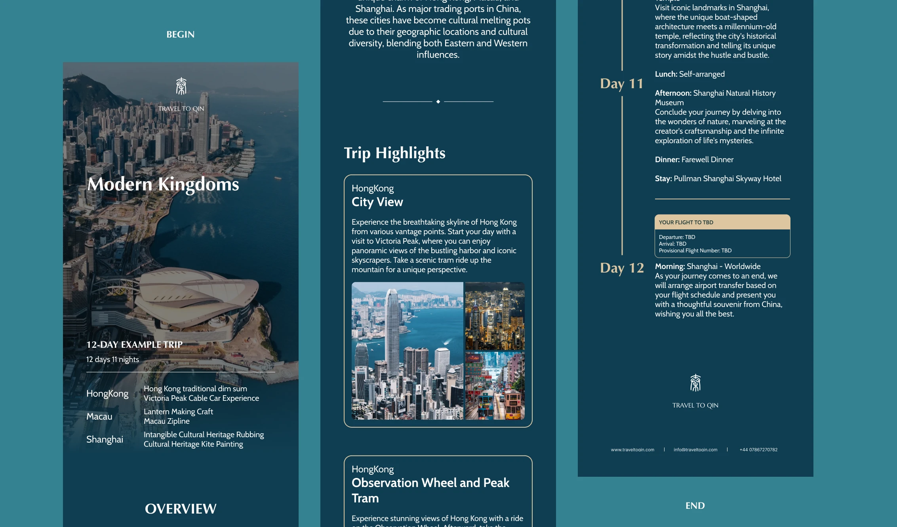
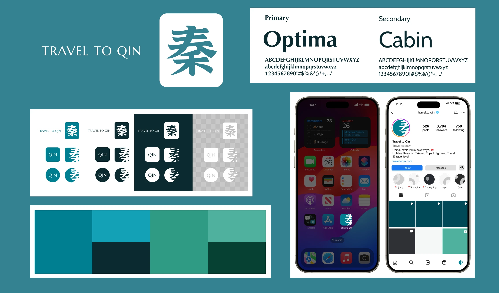
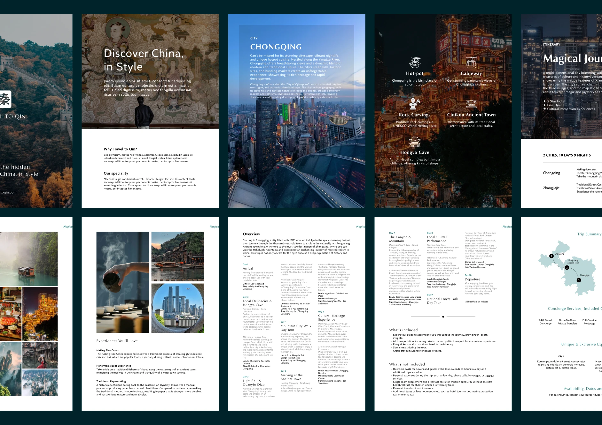
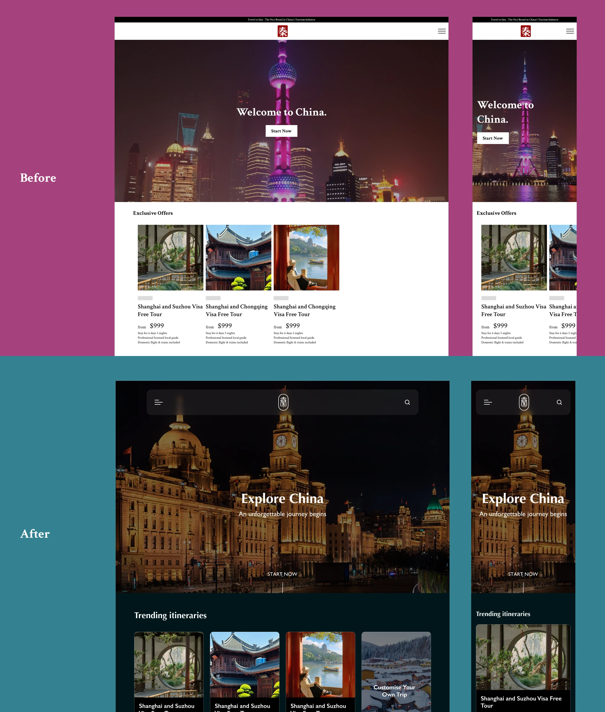

2024
Build trust before asking travellers to enquire
Travel to Qin is a CITS-backed inbound travel service for international visitors planning China trips. I redesigned the digital experience across the landing page, destination content, itinerary storytelling, brand system, and CMS handoff.
The goal was to explain the trip before asking visitors to enquire.

Problem statement
Because the old Shopify page behaved like checkout before explaining the trip, international visitors could not judge what was included, who supported them, or why the agency was credible enough to contact.
1 — Reorder the page around trust, not checkout
A foreign traveller considering China needs practical context before commitment: what they will see, who will guide them, what is included, how support works, and why the agency is credible.
I moved the page from a transaction-first structure to a trust sequence: destination atmosphere, itinerary structure, service explanation, proof, and enquiry clarity.
That gave the team a better enquiry surface: visitors could understand the offer before entering a sales conversation.

2 — Make itinerary content work as proof
Beautiful imagery could create interest, but it could not carry the whole decision. Visitors needed to understand what the trip included and whether the experience matched their expectations.
I treated itinerary content as proof: destination context, route structure, daily highlights, service expectations, and next steps were made easier to scan before speaking to the team.
Clearer itinerary proof reduced the burden on sales conversations and gave campaigns a more credible destination.


3 — Build a brand system that supports the service
The brand needed to feel connected to China without becoming decorative. Chinese calligraphy and landscape references gave the identity cultural grounding, while the layout system kept service information readable.
I defined visual rules for colour, typography, cards, page sections, and brochure assets so the team could keep campaigns and offline material consistent.
The brand system made the service easier to reuse across web, campaigns, and sales material without redesigning every asset from scratch.


Delivery and results
The final site gave the team a clearer sales surface for international visitors: destination first, itinerary proof second, enquiry path last.
It also gave the team CMS-ready content blocks they could update as trips, campaigns, and seasonal offers changed.

So what?
The project showed that travel UX is often a trust-order problem. If the page behaves like checkout before visitors understand the service, visual polish cannot fix the hesitation.
By making proof come before purchase, Travel to Qin gave international visitors a clearer way to understand the trip, compare the offer, and enquire with confidence.